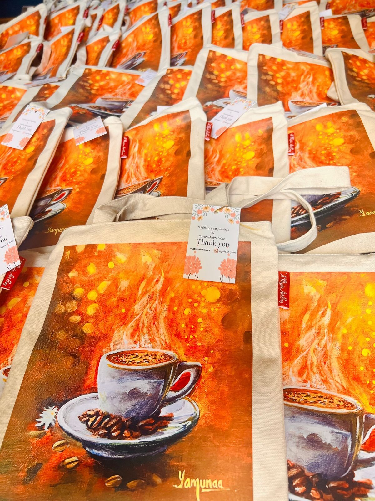

Philosophy
Art is a language of feeling. We use it to shape brand presence with clarity, warmth, and refined simplicity.
Creating Brands Through Art
By Yamuna Padmanaban
We build soulful brand systems that feel like art.
Every identity is crafted to communicate values, inspire loyalty, and create memory.
Art is a language of feeling. We use it to shape brand presence with clarity, warmth, and refined simplicity.
Aprisio
A canvas bag became a subtle extension of the experience — reflecting the warmth, craft, and intention behind the master class so the story lingered long after the last cup was poured.

Women in Big Data
A tribal art–inspired painting transformed the summit bag into a living brand story — the Kalpavriksha of Connections.

Visual systems that feel intimate, nostalgic, and alive.
Honest expression aligned with your values and community.
A cohesive narrative that lives across print, digital, and space.
Collaborative packages for creative brands, founders, and cultural spaces.
Work With Me